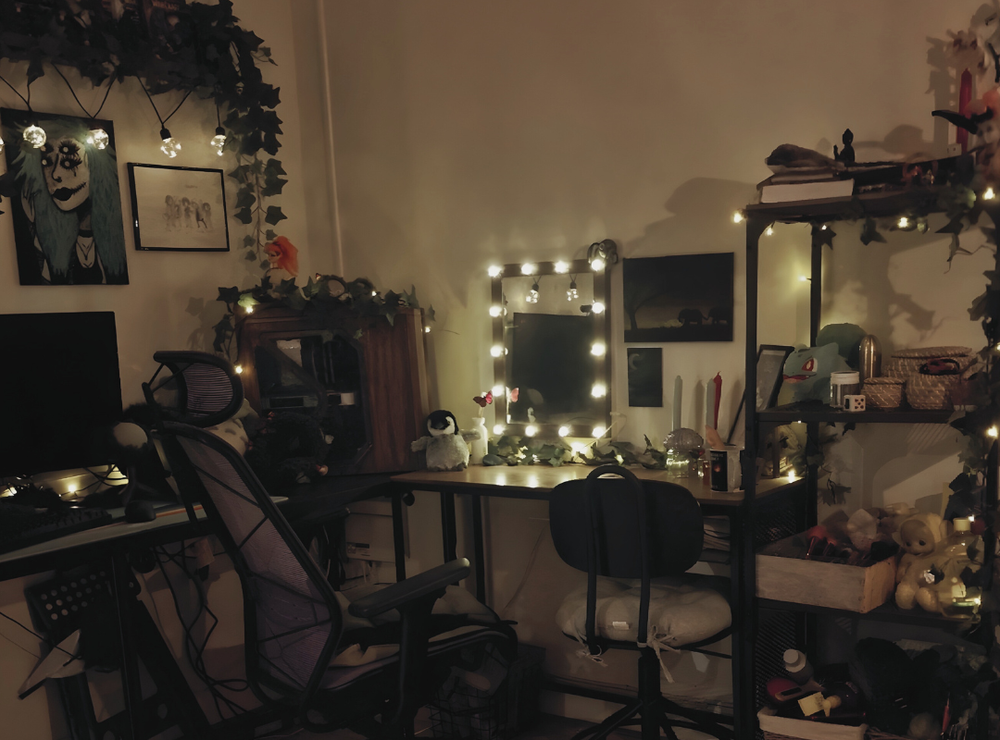

Studio Setup
A cozy tech nook built for warm light, quiet focus, and late-night creativity.
My studio is a quiet corner built around soft light, natural textures, and a calm, steady workflow.
It isn’t a big production space or a flashy gamer room — it’s more like a tiny workshop tucked inside a cozy cabin.
Everything here is chosen to support long, gentle creative sessions where ideas can shift and grow without pressure.
Lighting & Atmosphere
The heart of the setup is the lighting. I use warm, low-contrast lamps instead of bright overhead LEDs. The goal is a soft glow
— enough to keep everything visible, but dim enough to feel like late evening.
Shadows stay a little grainy, almost film-like, and the green notes in the room hint at a subtle solarpunk mood.
Nothing harsh. Nothing rushing. Just a quiet workspace that hums softly in the background.
Desk & Workspace Layout
My desk is kept intentionally simple: wood tones, a clean surface, and only the essentials within reach.
I keep space open so I can switch between tasks easily
— editing, sketching thumbnails, coding a layout, or
preparing a scene for Twitch.There’s room for a notebook, a mug of something warm, and a few small objects that
help set the pace: a plant, a piece of driftwood, an old mechanical part, a pen that feels good in the hand.
The whole layout is designed around flow. No clutter. Nothing that forces attention away from the work. Just a slow, steady rhythm.

Hardware & Equipment
♡ A stable PC setup tuned for editing, streaming, and design work
♡ Dual monitors for clean multitasking: code on one, visuals on the other
♡ A microphone with a soft, rounded profile to keep my voice warm and gentle
♡ A camera angled to capture the cozy lighting without feeling staged
Purpose of the Space
This setup isn’t about productivity hacks.
It’s about creating a calm foundation that supports the kind of content I make: warm,
thoughtful, slightly mossy around the edges, and never in a hurry.
It’s a studio built to encourage consistent small steps.